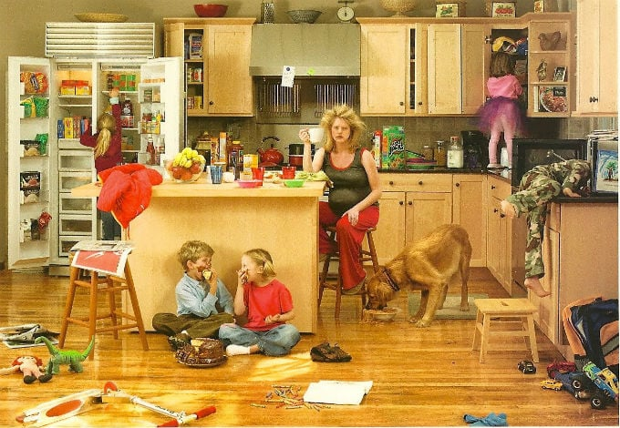
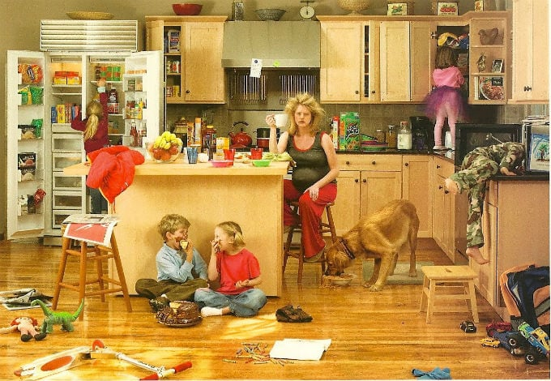

About Chinese Postpartum Traditions
What is a traditional confinement?
In Traditional Chinese Medicine (TCM), it’s believed after a mother gives birth there is an empty space within her body where the baby once was. The mother’s body is open, her ligaments are loose, and if wind or cold comes into this open space, it will cause further ailments and prevent the body from properly healing.
Things you cannot do
During postpartum confinement, a new mother is encouraged to stay warm inside and avoid touching cold objects, drinking cold liquids or eating cold food. In a very strict traditional Chinese confinement, a new mother will not wash her hair, shower or brush her teeth as it is believed that contact with water opens the pores, causing wind and cold to enter the body, which is believed to accumulate over time and cause health complications later in life.
A traditional confinement also encourages no physical activity, including housework and sometimes includes removing all distractions like television, books and mobile devices to ensure that the primary focus of the mother during confinement is rest.
How long does a traditional confinement period last?
A traditional confinement lasts 40 days to allow the mother’s body to close up and rebalance after childbirth. Nourishment during this time is the cornerstone of confinement and is considered essential in helping mothers to recover and restore energy and vitality.
Foods recommend to eat
Pork knuckles and ginger stew
Traditionally, they use a lot of ginger, wine and sesame oil in their diet.